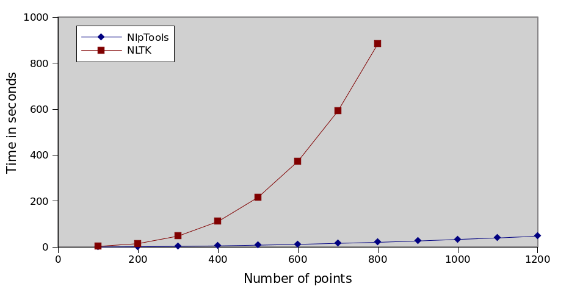
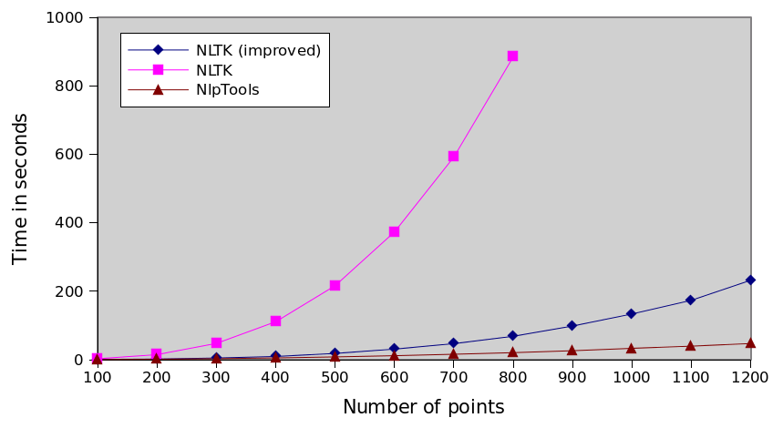
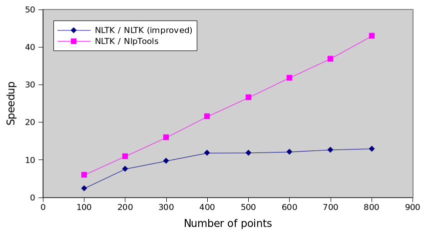

Hierarchical Clustering - NlpTools vs NLTK Jun 15th, 2013
First of all, I want to clarify that this post is not about bashing NLTK or even implying that NlpTools can be a replacement for the great tool NLTK is. It is simply a comment on a bad implementation of an algorithm that is probably not considered important by the NLTK developers.
In the rest of the post I will assume that you have read the previous post regarding hierarchical clustering algorithms, their asymptotic time complexities and what I have chosen to implement so far in NlpTools.
Introduction
I wanted to test the output of the hierarchical clustering implementation in NlpTools so I decided to run a comparison of the resulting dendrograms with an already established and tested library. I browsed NLTK and read through the clustering package's documentation page. Based on the information there I went on to look at the implementation at github.
Naive implementation
NLTK's implementation is the one described in the previous post as naive. It has time complexity O(n3). According to the docs, they chose to support only the cosine similarity distance metric and the group average linkage method because thus they could do some optimizations and gain a speed up, so there must be something I am missing. In addition, NLTK uses numpy for efficient computation of matrix operations.
Considering the above, I still thought php would be slower since I did not even use the native heap implementation (SplHeap) for the linkage method. I created a dataset of two-dimensional random points and decided to run and compare the times. The code that I used to run the clustering and get the times can be found in this gist (I wrote the gist before I decided to write this post).

How bad the implementation actually is
As I have mentioned already the implementation is asymptotically worse than the one in NlpTools. But does this really account for the huge difference shown on the above graph. Actually it doesn't. NLTK does not use a dissimilarity matrix at all in this implementation. It recomputes the pairwise cluster similarity again for each merge. That means, besides the unnecessary function call, that the asymptotic complexity of the algorithm is even worse (something not shown by this sample dataset). The complexity of the algorithm is actually O(n3•M) where M is the number of dimensions that our points have.
Keep in mind that this dataset's points only have two dimensions which means that the difference we see here is mostly due to the function call overhead and not due to the data dimensionality problem (which can be huge especially when dealing with text data).
Assumptions about why
Saving memory
Using a matrix of pairwise similarities or dissimilarities requires O(n2) memory space while computing the similarities each time only requires O(n) for the clusters. Thus NlpTools would exhaust a computers memory before NLTK ever reached to 50%. On the other hand, if it ever reached 50% there is no way it would finish computing the clusters in our life time, so there is not much point in saving memory (except if the computer had really small memory, about 100MB).
Relying too much on numpy
Numpy is a great library for fast matrix operations in python, that doesn't mean that numpy operations are O(1) constant time. Accessing lists and dicts in python, on the other hand, is. One thing one can assume is that NLTK developers got a bit carried away by the greatness of numpy and thought it to be the tool for every job. The "efficient speed up" is actually what makes this implementation that slow.
10+ times speed up with 46 lines of code
The following changes are a quick and dirty addition of a similarity matrix to the algorithm. Asymptotic time complexity still remains O(n3) and memory usage is now O(n2). The code is a drop in replacement for the lines 46 to 73 of nltk/cluster/gaac.py that doesn't require changes in any other part of the nltk cluster module. Moreover, by making a small change in the 11th line below this implementation could accept any function as a distance metric.
Graph running times
For the following graphs each algorithm was run 10 times and the average is plotted. I would also plot the standard deviation but it was insignificant. The data can be found here as csv and here as a gnumeric document.
Comparison of every implementation

NLTK series is incomplete because it took too much time to run the tests. You can interpolate that it would take more than 8 hours to actually cluster 1200 points ten times.
Relative performance
The following graph is actually the most interesting. It shows that with this improvement we have not actually solved any problem, we have simply made the algorithm 13 times faster. The execution time still increases by the cube of the number of points which means that the NlpTools implementation will always be incrementally faster as the number of points increases.
